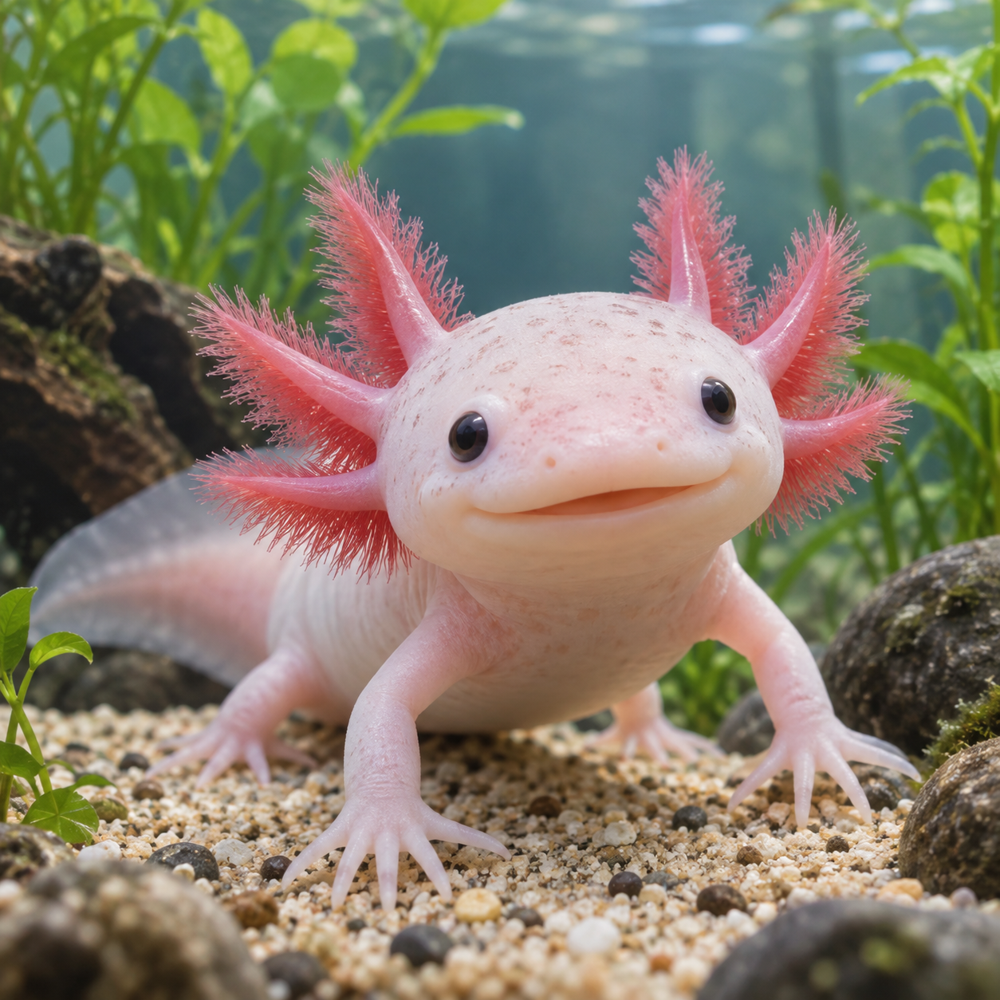
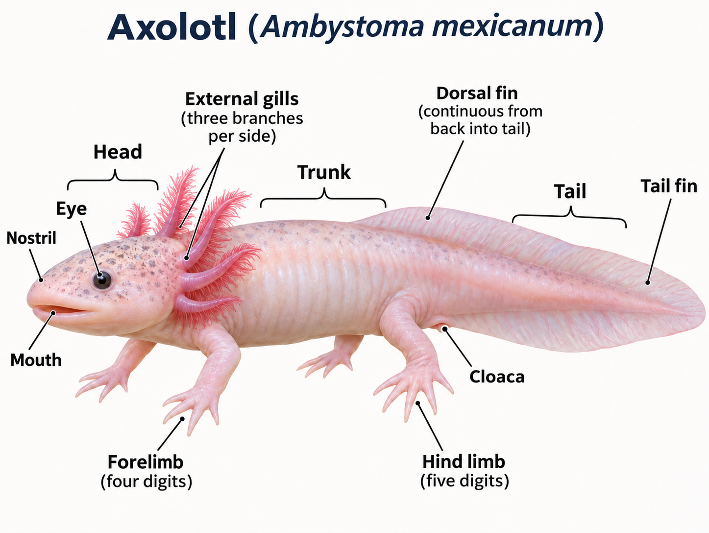

What Is an Axolotl?
Axolotls are salamanders that never really grow up. Most salamanders lose their gills and crawl onto land as adults, but the axolotl keeps its larval body its entire life and stays in the water, a trait scientists call neoteny.
That is why researchers study them so closely. In the wild they live in the canals of Lake Xochimilco near Mexico City and they are critically endangered. However, thousands live happily in labs and home aquariums.
The Parts of an Axolotl

Illustration of axolotl anatomy. The labeled parts are the head, eye, nostril, mouth, external gills (three branches per side), trunk, dorsal fin (continuous from the back into the tail), tail, tail fin, cloaca, forelimb (four digits), and hind limb (five digits). The gills and tail fin are larval features that most salamanders lose as adults, but the axolotl keeps for life.
Keep Reading
Curious why axolotls are disappearing from the wild, or what colors they come in besides pink? Visit the Conservation & Colors page. Thinking about keeping one? Start with the Care Basics page.
Contact Me
If you have information you would like to share, or notice any errors on this site, send me a message. Together we can make it better.